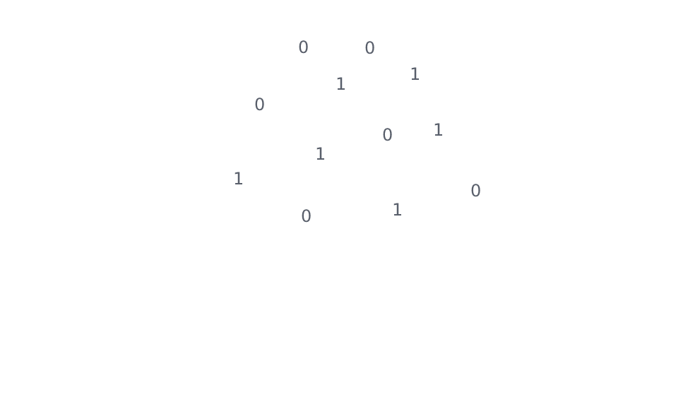
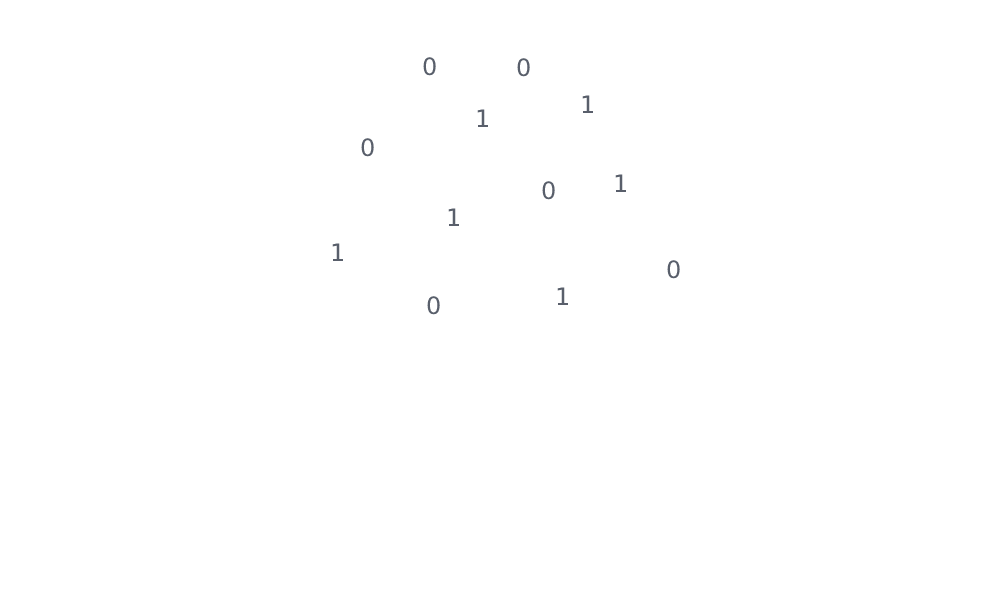

About
What is Li-Fi?
Li-Fi technology, also known as Light Fidelity, is a wireless communication technology that uses visible light to transmit data. It is similar to Wi-Fi technology but instead of using radio waves, it uses LED lights to transmit data. This technology offers several advantages over traditional radio-based wireless communication technologies, including higher bandwidth, greater security, and no electromagnetic interference. Li-Fi has the potential to revolutionize the way we access the internet by providing faster and more secure wireless communication. It can be used in a variety of applications, including indoor navigation, smart homes, and industrial automation. While Li-Fi is still in the early stages of development, it has already shown promising results in laboratory settings and is expected to become more widely available in the coming years.
 
